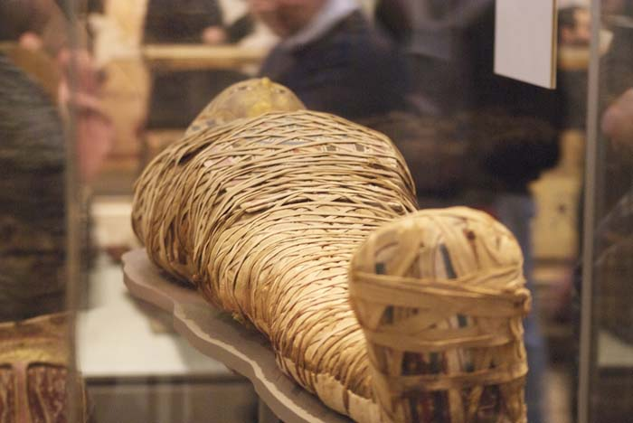
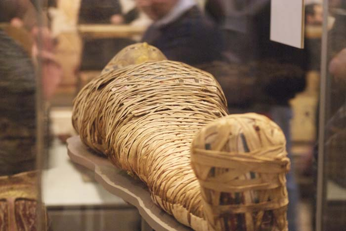

Classroom
Mummification
Mummification is the process where the gods take the deceased and prepare them for the afterlife. The mummification process had to be done the right way for the pharaoh's permanent resting place. In order to do this, there were many steps to be completed to prepare the deceased for eternal rest in the afterlife.
To prepare the deceased, the first step that is presented is to remove the brain. They do this by taking a brai hook, and putting it up through the nose and removing it as it becomes mush. Then liquid resin would be poured in the cranium so no bacteria would grow inside of the head.
Next, the gods will create an incision on the lower left side of the stomach and the embalmers will remove the lungs, stomach, liver, and intestines. The only part that the embalmers kept inside the body was the heart because they would say that the heart was what your soul would be like. Once all the organs are removed, they are then placed in four little jars called canopic jars. One jar is for each organ. From left to right of the picture of the jars, each one has a special name and for each organ. The first one on the left is named Qebehsenuef, of the West Guardian of the intestines. The second one is Hapi, of the North Guardian of the lungs. The third one is named Duamutef, of the East Guardian of the somach. Lastly, on the right is named Imseti, of the South Guardian of the liver.
After the organs have been removed from the body, the body was then washed down with oils, resins, lotions, and preserving fluids. The body was filled with staw and linens to keep the shape of a human body. Once it was filled, the body was then covered in nacron or natron salts. This removed moisture and prevented rotting. Then the body was taken outside for forty days to dry out. Once it was dry, it was time for the body to be wrapped.
Wrapping the body took a while. There were parts that had to be wrapped separately. Hundreds of yards of ;linen were used to wrap the entire body. Separately from the larger parts, the arms and legs, fingers and toes had to be wrapped separately. Once the body was entirely wrapped, the Egyptians placed charms, amulets, and jewelry that would bring luck to the body. They were wrapped within each layer of the linen. The Eye of Horus was used a lot. It symbolized protection. The embalmers would stop wrapping every so often so that the priest can say prayers and write on the linen. The mummia was added to hold all the linens together (that's where mummy comes from). Afterwards, a mask would be placed over the mummy's head so that the soul (Ka) can recognize th eowner. Finally, they are placed in a decorative coffin and are able to be put to rest for eternal life.
 
